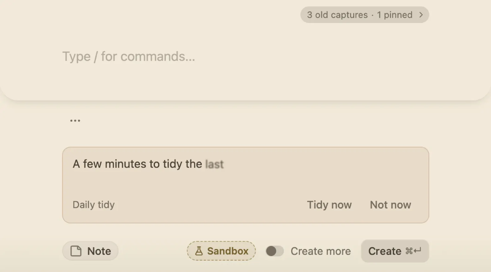

Two keys from any app to a safe place.
Quick capture opens over whatever you are doing. Write the thought and put it away. It waits in your Inbox until you have a minute.

How it works
- ⌘ . opens it anywhere. Write a line or a page; ⌘ ↵ sends it and the box goes away.
- Small signs do more. Type 5m tea and a timer starts. Start with + and a goal or question name, and the words join it as a log or a clue.
- Tasks read the way you talk. Write call Mum friday 6pm and the day and time come with it.
- The Inbox is a waiting room. Tidy it once a day: keep a note as a gem with P, hold it as a question with H, or let it go. Nothing is deleted; a discarded note can always come back.
- It notices repeats. Catch the same thought three times and Vigil puts it in front of you.